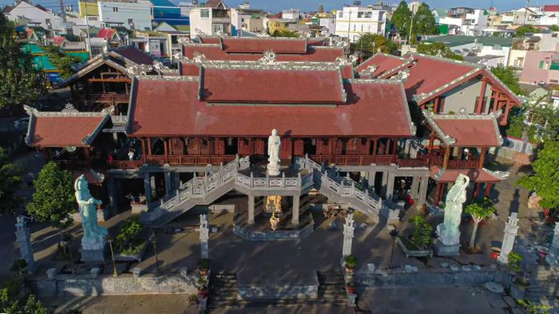
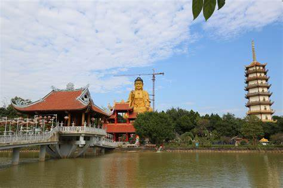

🌸 ♥
HOTLINE: 02433 610 897 - 0986 611 496 Địa chỉ: Thôn Tây Ninh, xã Sơn Đông, TX Sơn Tây, TP Hà Nội
| 
Điểm nhấn của chùa chính là bức tượng Phật A Di Đà lớn nhất Đông Nam Á, cao 72m, đường kính bệ tượng lên tới 1.200m2, được khởi dựng từ năm 2015, hiện vẫn trong quá trình hoàn thiện.
Bên trong pho đại tượng Phật gồm 13 tầng, trong đó 12 tầng được bố trí cho khách tham quan thờ Bồ Tát và tầng âm được xây dựng thành lục đạo luân hồi gồm nhiều cõi như a tu la, địa ngục, quỷ ngã….
|
Chùa Khai Nguyên có niên đại lịch sử từ thời nhà Lý, do vị trí địa lý không thuận lợi nên chùa dần dần bị lãng quên, xuống cấp. Đến thời nhà Nguyễn, chùa Khai Nguyên được nhân dân chuyển về miếng đất mới ở trước cửa của đền Trung.Trải qua hai cuộc chiến tranh Pháp, Mỹ ngôi chùa đã bị tàn phá nghiêm trọng. Năm 1997, bà Vương Thị Nhật đã đứng lên kêu gọi mọi người tu sửa lại dưới sự đồng ý của các cấp chính quyền địa phương.
Năm 2008, Đại đức Thích Đạo Thịnh đã được bổ nhiệm về trông nom chùa Khai Nguyên. Sau khi tiếp nhận, ông đã làm đơn xin chuyển chùa về vị trí cũ và được chấp thuận. Chùa Khai Nguyên đã chuyển về vị trí cũ trước cửa đền Trung vào tháng 7/2008.
|
Tản Viên Sơn Quốc Tự có kiến trúc vô cùng đặc biệt, cổ kim kết hợp giao hòa. Chùa vừa mang vẻ đẹp của những kiến trúc cổ hòa quyện cùng với những đường nét hiện đại, thu hút rất đông du khách tới đây. So với các ngôi chùa như Yên Tử, Ngọc Hoàng thì chùa Khai Quang có diện tích nhỏ hơn nhưng nếu so sánh về kiến trúc thì không hề kém cạnh. Sự kết hợp giữa kim và cổ mang đến sự độc đáo, đặc sắc riêng cho ngôi chùa linh thiêng này.
Chùa Khai Nguyên có tổng diện tích khoảng 5000m2, bao gồm tháp Trống, tháp Chuông, động Quan Âm, chính điện, suối Quan Âm và nội viện.Khu vực chính điện đặt ba pho tượng uy nghi, tráng lệ; tương truyền đây là ba vị thần Thánh Tản Sơn. Bên tả của chính điện là dãy nhà khách có diện tích khoảng 400m2, thiết kế hai tầng lạ mắt. Bên hữu là dãy Tăng Độ rộng khoảng 250m2, xây dựng theo kiến trúc một tầng mái ngói.
|

Chùa Khai Nguyên còn thu hút rất đông du khách bởi hệ thống tượng Phật. Trong ban Tam Bảo có tới 1975 pho tượng lớn nhỏ, tạo nên hình thái kiến trúc độc đáo.Ngoài ra, chùa Khai Nguyên còn lưu giữ một số di vật có giá trị như hai tấm bia đá có niên hiệu Cảnh Hưng thứ 19 (năm 1759) và Gia Long thứ 14 (năm 1815); 1 quả chuông đồng niên hiệu Tự Đức thứ 22 (năm 1870). Đây là nguồn sử liệu quý có giá trị văn hóa - lịch sử của Tản Viên Sơn Quốc Tự.
|
VIDEO GIỚI THIỆU VỀ CHÙA KHAI NGUYÊN |